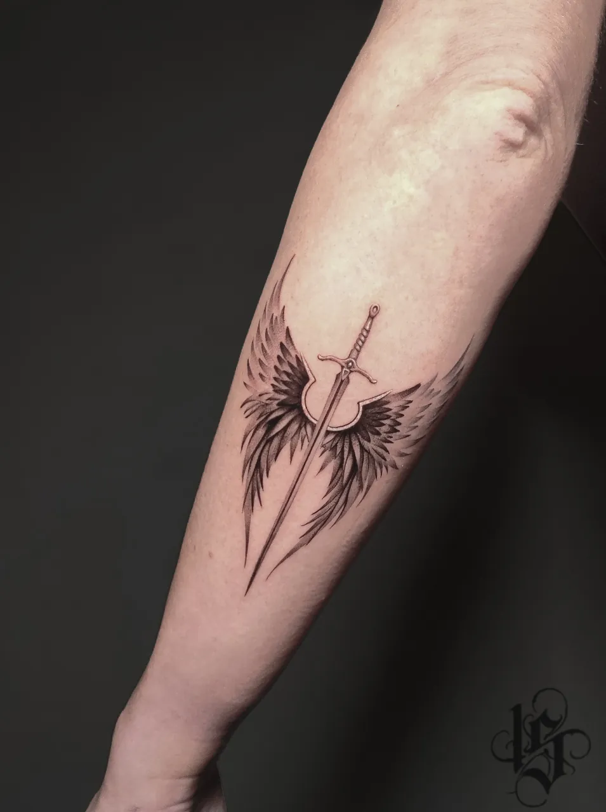
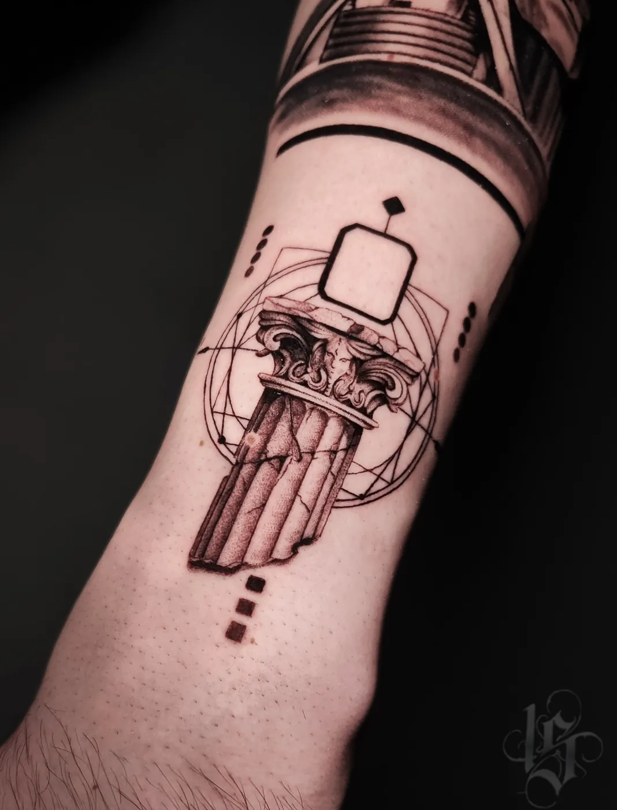
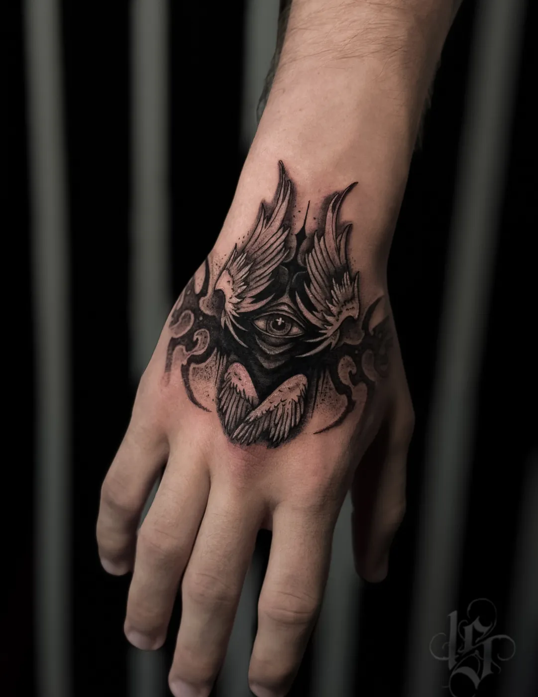

Тату-студия INKSIDE · Минск
Мини тату в Минске
Маленькие тату, тонкие линии и графика. Первая тату без страха: бесплатно обсудим идею, подберём место и назовём цену до сеанса. Мини - от 180 BYN.
Консультация бесплатная. Ежедневно 11:00-23:00 по записи.
Если это первая тату
Небольшая работа - спокойный способ начать. Напишите идею в двух словах: мастер честно скажет, подойдёт ли она вам и сколько будет стоить. Консультация бесплатная и ни к чему не обязывает.
На сеансе одноразовые иглы вскрываем при вас, а паузы делаем, когда нужно.
Не расплывутся ли тонкие линии
При правильной глубине и расстоянии между деталями - нет. Поэтому мастер подгоняет эскиз под размер и место. Если идея слишком детальная для 3-4 см, вам предложат чуть увеличить рисунок или упростить его.
Куда сделать мини
Ощущения зависят от зоны: руки и икры терпимо, рёбра и кисти чувствительнее. Место влияет и на цену: в калькуляторе на главной рёбра, шея и кисть считаются дороже, чем рука или нога.
Кто делает мини
Надежда - мини и fine line, микрореализм, тонкие линии и цвет. Работы: @st.nadya_tattoo.
Виталий тоже делает мини тату, хотя его основная специализация - ч/б реализм и крупные проекты.
Цена мини тату
Мини до 5 см - от 180 BYN: это минимальная стоимость, в неё входит до 1 часа работы. Тату 5-10 см - от 330 BYN.
| Минимум, до 1 часа | 180 BYN |
| Каждый следующий час | 150 BYN |
| Эскиз под вас | от 40 BYN |
| Консультация | 0 BYN |
| До 5 см | от 180 BYN |
| 5-10 см | от 330 BYN |
| 10-20 см | от 480 BYN |
| Рукав, нога или большая работа (сеанс) | от 930 BYN |
Итоговую цену мастер называет после утверждения эскиза: важны детализация, размер и место.
Уход по дням
- День 1-3. Плёнку держите столько, сколько сказал мастер. Мягко промывайте, тонкий слой мази.
- День 4-10. Шелушение и зуд - норма. Не чесать, без бани, бассейна и моря.
- День 11-30. Лёгкий крем дважды в день, прячем от прямого солнца.
- Через месяц. Присылаете фото зажившей тату. Если нужно, записываем на коррекцию.
Работы






Больше работ - на главной и в Instagram @inkside.minsk.
Вопросы
Сколько стоит мини тату?
До 5 см - от 180 BYN (минимум, до 1 часа работы), 5-10 см - от 330 BYN. Эскиз под вас от 40 BYN.
Расплывутся ли тонкие линии?
При правильной глубине и расстоянии между деталями - нет. Поэтому мастер подгоняет эскиз под размер и место.
Это больно?
Зависит от зоны: руки и икры терпимо, рёбра и кисти чувствительнее. Делаем паузы, когда нужно.
Как подготовиться к сеансу?
Выспаться, поесть перед сеансом, без алкоголя накануне. Одежда, которая открывает зону.
Записаться
Напишите идею в двух словах: мастер честно скажет, подойдёт ли она вам и сколько будет стоить.
- адрес
- Минск, пер. Макаёнка 4, пом. 64
- телефон
- +375 (44) 511-19-12
- часы
- ежедневно 11:00-23:00, по предварительной записи